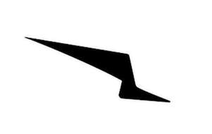

Trade Mark Journal No.2025/011 14 March 2025
UK00004166186 27 February 2025 (25)

International priority date claimed: 28 August 2024
(United States of America)
(98721002)
- Class 25
- Apparel; Clothing, namely, suits, sport coats, collared shirts, dress shirts, slacks, rainwear, jackets, jerseys, sweaters, coats, scarves, ties as clothing, pocket square kerchiefs, socks, underwear, shirts, pants, shorts, denim jackets, denim jeans, t shirts, tank tops, sweatshirts, loungewear, bottoms as clothing, tops as clothing, caps being headwear, hats, beanies, gloves; sportswear, namely, sports shirts, sports jackets, sports singlets, sports vests, sports bras, sports jerseys and sports pants; sleepwear, sweat pants, leggings, tights, underpants, trousers, athletic uniforms, bathing suits, headbands, headwear, warm up suits, neck warmers being clothing, vests, sun visors being headwear, face masks being headwear, wraps being clothing, wristbands being clothing, muffs and mittens being clothing, belts for clothing, bandanas, hoods being clothing; swimwear, beachwear, tennis wear, surf wear, ski wear, clothing layettes, infantwear, infant sleepers being clothing, booties, baby bibs not of paper; footwear; shoes and sneakers; boots, galoshes, sandals, flip-flops for use as footwear, and slippers; Shirts and short-sleeved shirts; Athletic jackets; Clothing jackets; Short-sleeved or long-sleeved t-shirts; Sweat jackets; Socks; Shoe inserts for primarily non-orthopedic purposes.
Wolf & Shepherd, Inc.
Representative: Gill & Gill